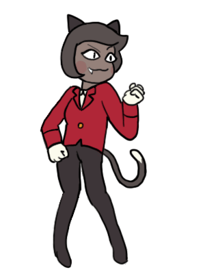
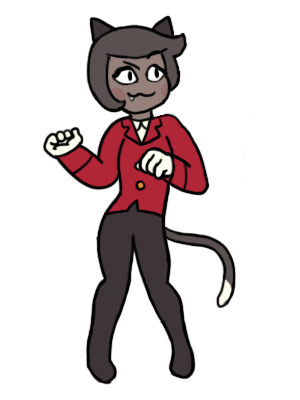

Minecraft Speedbuild
This is a speedbuild I made of a building in Minecraft. It was part of the Build the Earth project. You can learn more about them below at:
buildtheearth.netLots of Lumis!
This is an exercise I made in my intro to digital video class using clipping masks. I showed my plushie of Lumi from Lumi and the Great Big Galaxy appearing multiple times on my desk.
Purrcival animated gifs


These are a collection of animated gifs that I drew in Photoshop of the character Purrcival in the style of fighting game animations.
Purrcival's Yarn
This is my finale in my intro to digital video class featuring Purrcival again. He throws a ball of yarn and it travels back and forth. The video was composed in After Effects.